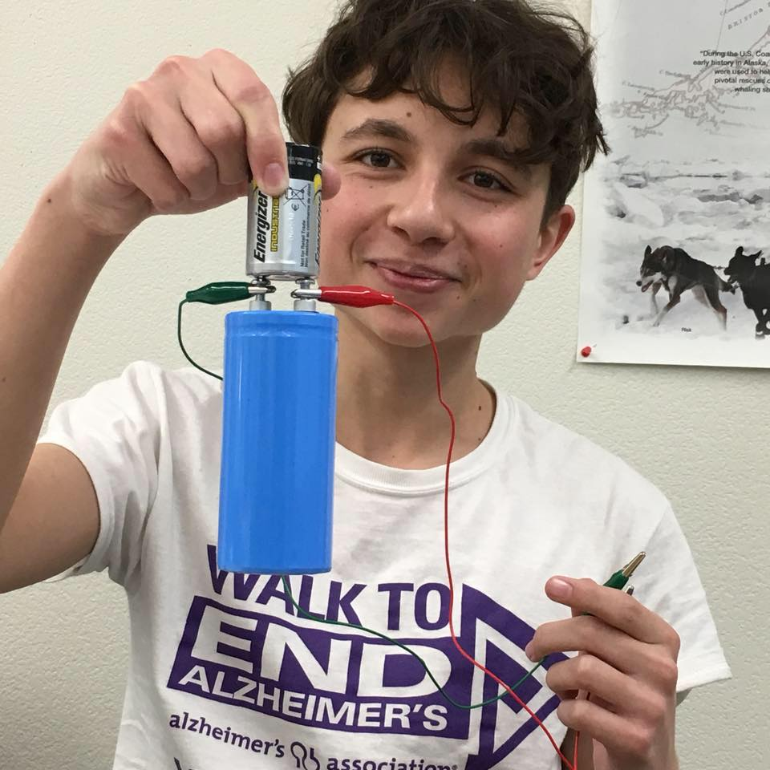

This assignment was to make a copy of one of the instructor's website. I must have contain: an image, a hover, a button that changes if the pointer is over it and when you click it goes to another page in the same tab, along with a sound.
A simple project I did, I just had to make a switch. Click it, it turns blue. Click it again, it turns gray. And I'll like to point out it has smooth animation when it's clicked.
A unfinished, forgotten project. It was suppose to give a message, if you clicked it.
A side project where I make an add box with a website linked to it, and that link is presented before in a small box.
This is one of biggest projects I've done. It's all of the things I've learned in Code Central into one website. It's still being built and I hope it'll look professional's website.
I started this website with a new instructor in Code Central, Victor, cool guy. I was taught how to separate my HTML, Java, and CSS into three different files that link altogether and still function like a single website.
(This is the guy.)
My first CSS project, I was assigned to make a menu symbol to move the bars and make an X symbol, then later was told to do an after image on making a triangle and other shapes. But I moved on to another project.
I was supposed to make the previous project change color, but I also added a moving square that changes color.
A project where I just had the background color change everytime you click it, then I added a box that showed the hex code with pandas beside it.
This is the same as Random Color Generator, except in the background it is the frame around the tranparent panda image.